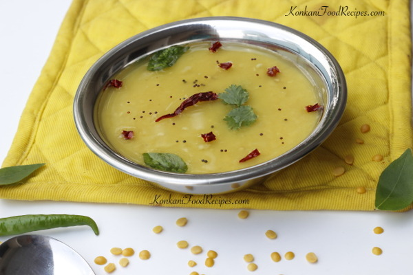

Home
Dalithoy

Description
Dalithoy is the heart and soul of Konkani cuisine, an essential dish at every occasion for Konkani-speaking
people. This simple yet flavorful daal, made from split yellow lentils, is a staple that Konkani households
simply cannot do without. A meal of dalithoy and rice is all that’s needed for a wholesome and satisfying lunch
or dinner. Words can’t fully capture the significance of dalithoy in Konkani cuisine—it is lovingly referred to
as "thoy" or "DDT," short for "dat" (thick) dalithoy.
In Konkani, "daali" means daal or lentils. Dalithoy is an incredibly easy-to-make dish that comes together in no
time yet remains absolutely delicious. It pairs well with vegetable sides, hot phulkas, and even bread, though
its best combination is with hot, steaming rice. A generous drizzle of ghee or a squeeze of lemon enhances its
flavor even more.
Ingredients
- 1 cup split yellow lentils/toor dal
- 1 dried red chilli
- 3-4 green chillies
- 1 tablespoon of freshly chopped coriander leaves
- 2 tablespoons of ghee
- Salt to taste
- A pinch of asafoetida
- 2 leaflets of curry leaves
- 1/4 teaspoon mustard seeds
Steps
- Boil washed lentils in a pressure cooker along with slit green chillies and 2 cups of water, until the
lentil is cooked well and mushy.
- Transfer the cooked lentil into a cooking vessel, add 1/2 to 1 cup of water if required. Dalithoy is usually
thick in consistency, but you can make it watery if you like. Gauge the level of thickness you would like
your daal to be and appropriately add more water as required.
- Add salt and asafoetida melted in water to the daal and bring it to boil. Simmer for few minutes so that the
dalithoy gets a little thick.
- For added flavour add lots of chopped fresh coriander, just before you put off the flame and remove off
heat.
- Seasoning the daal: Heat ghee in a tempering pan, add mustard seeds. When they start spluttering add curry
leaves and roughly broken pieces of red chilli. Fry them for a minute. Then add lots of asafoetida powder to
the seasoning if you haven't added asafoetida to the dal earlier. Remove off heat, add the seasoning to the
daal and mix well.